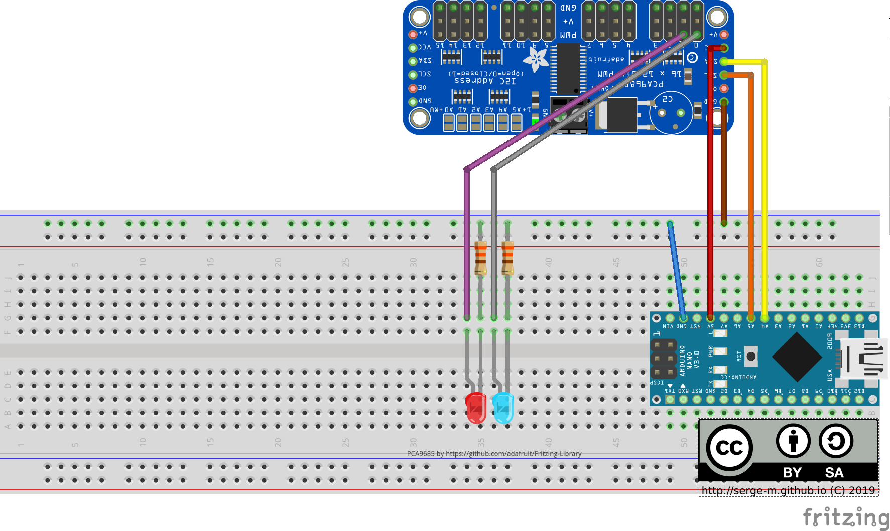
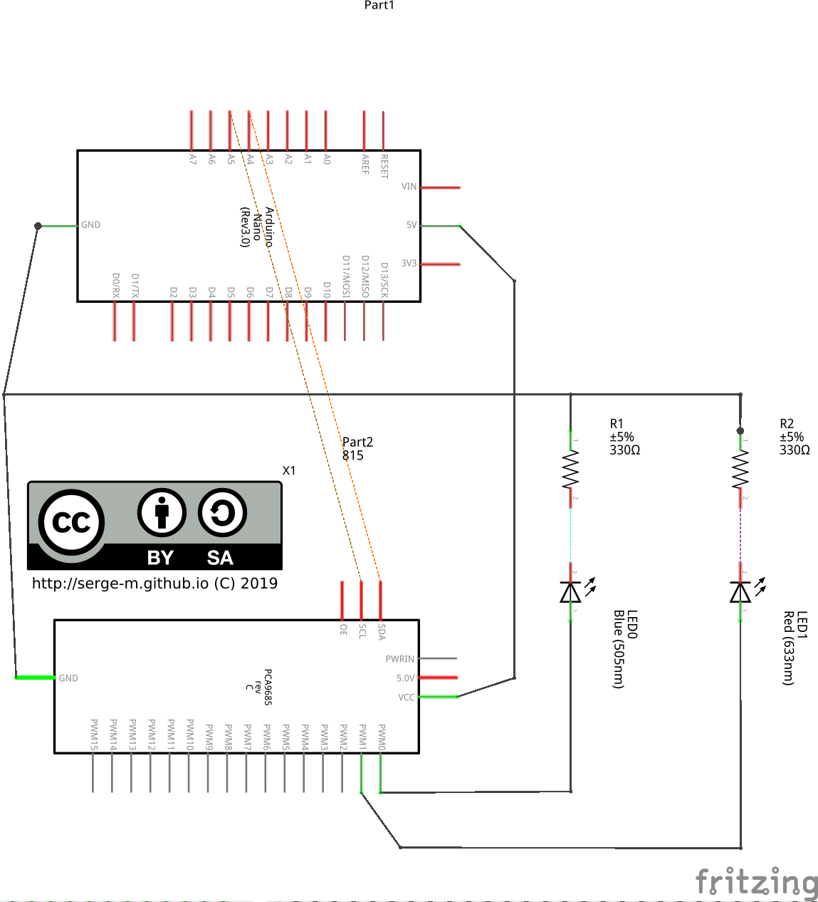
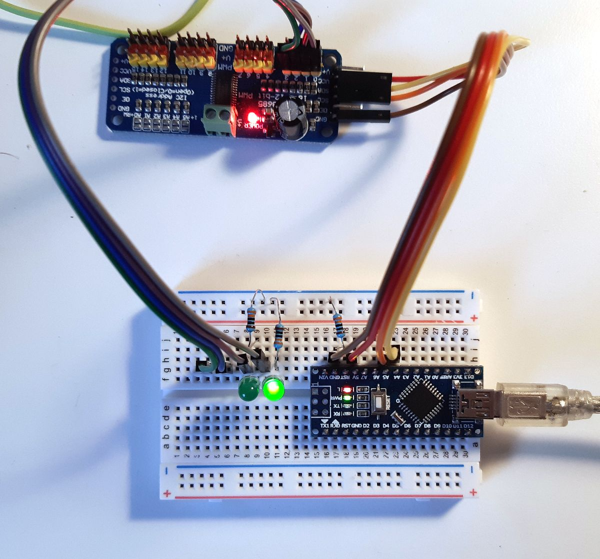
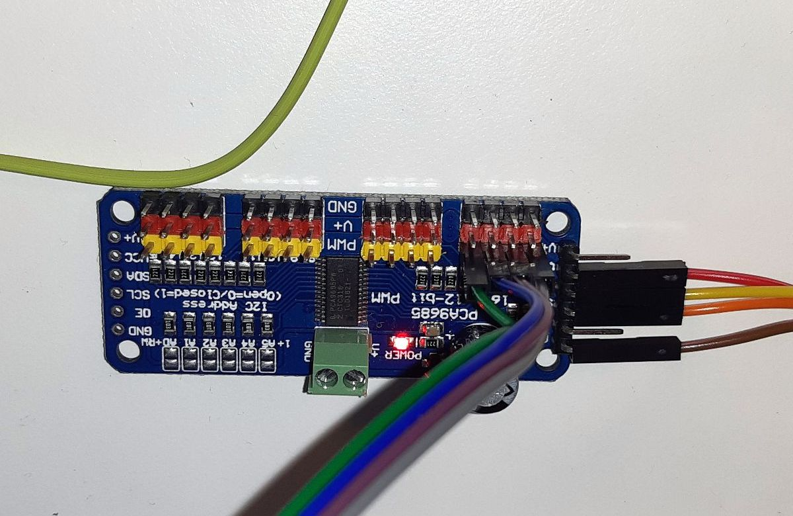

Arduino (ATMega328p) boards can be used to control multiple LEDs. To simplify the management of the pulse width modulation and use only a couple of arduino's pins for many LEDs I used PCA9685 controller.
PCA9685 is connected to Arduino using I2C interface that requires only two data pins.
   Arduino connects to PCA9685 using Adafruit_PWMServoDriver library:
#include <Adafruit_PWMServoDriver.h>
Adafruit_PWMServoDriver pwm = Adafruit_PWMServoDriver();
Initialization in setup():
pwm.begin();
pwm.setPWMFreq(1600); // This is the maximum PWM frequency
Then for each loop we will blink with 2 LEDs. That can be easily extended to more LEDs:
Initialization in setup():
void loop() {
// set state 1
digitalWrite(LED_BUILTIN, HIGH);
pwm.setPWM(0, 0, 3072);
pwm.setPWM(1, 0, 4096);
// wait
delay(500);
// set state 2
digitalWrite(LED_BUILTIN, LOW);
pwm.setPWM(0, 0, 4096);
pwm.setPWM(1, 0, 4095);
// wait
delay(500);
}
pwm.setPWM(p, start, end); means that for the pin p
the signal should transition from low to high at tick start (between 0..4095)
and the signal should transition from high to low at tick end (between 0..4095).
There are special settings for full on and full off. Full on:
pwm.setPWM(pin, 4096, 0);
Full off:
pwm.setPWM(pin, 0, 4096);
Along with the other LED we will also control an LED that is built in the Arduino:
void setup() {
pinMode(LED_BUILTIN, OUTPUT);
// ...
}
void loop() {
digitalWrite(LED_BUILTIN, HIGH); // LED on
// ...
digitalWrite(LED_BUILTIN, LOW); // LED off
// ...
}
Here is the full listing:
#include <Adafruit_PWMServoDriver.h>
Adafruit_PWMServoDriver pwm = Adafruit_PWMServoDriver();
void setup() {
pinMode(LED_BUILTIN, OUTPUT);
pwm.begin();
pwm.setPWMFreq(1600); // This is the maximum PWM frequency
}
void loop() {
// set state 1
digitalWrite(LED_BUILTIN, HIGH);
pwm.setPWM(0, 0, 3072);
pwm.setPWM(1, 0, 4096);
// wait
delay(500);
// set state 2
digitalWrite(LED_BUILTIN, LOW);
pwm.setPWM(0, 0, 4096);
pwm.setPWM(1, 0, 4095);
// wait
delay(500);
}
Results:
One issue I had with that Adafruit_PWMServoDriver library is that it is blocking. If your PCA9685 is off or gets disconnected the whole program freezes. As far as I understand Adafruit_PWMServoDriver uses Wire as a backend and Wire is blocking. That is a known issues and there are some workarounds.
Comments
comments powered by Disqus